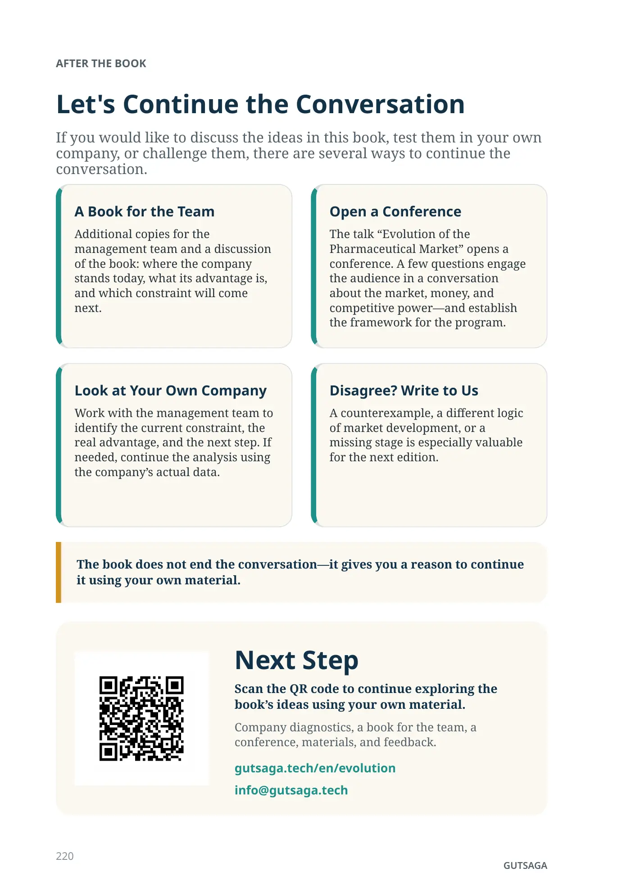
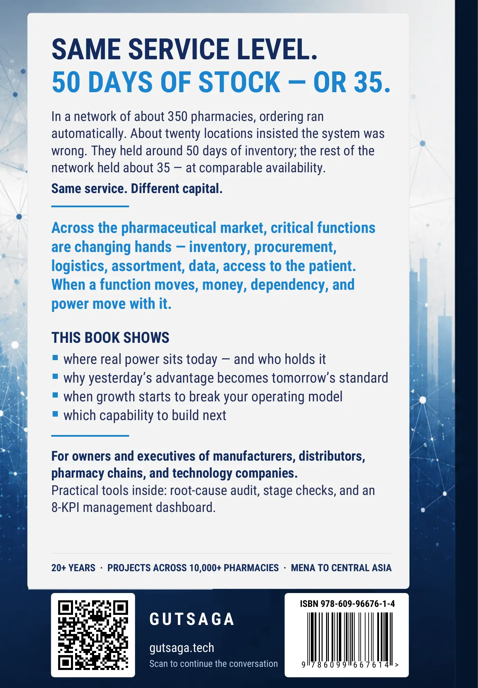

After the Book
Let's Continue the Conversation
If you would like to discuss the ideas in this book, test them in your own company, or challenge them, there are several ways to continue the conversation.
A Book for the Team
Additional copies for the management team and a discussion of the book: where the company stands today, what its advantage is, and which constraint will come next.
Open a Conference
The talk “Evolution of the Pharmaceutical Market” opens a conference. A few questions engage the audience in a conversation about the market, money, and competitive power—and establish the framework for the program.
Look at Your Own Company
Work with the management team to identify the current constraint, the real advantage, and the next step. If needed, continue the analysis using the company’s actual data.
Disagree? Write to Us
A counterexample, a different logic of market development, or a missing stage is especially valuable for the next edition.
GUTSAGA